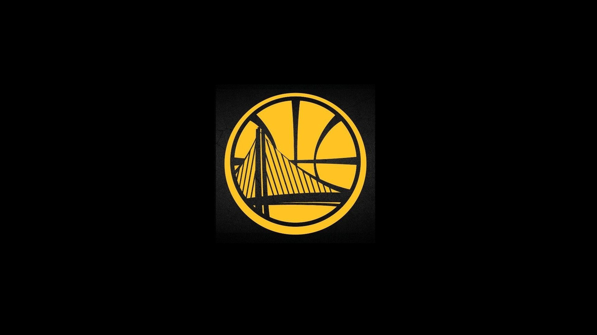

single picture

picture with text
Golden State Warriors adalah sebuah tim bola basket profesional Amerika Serikat
yang bermarkas di San Francisco, California. Warriors berkompetisi di National
Basketball Association (NBA), sebagai anggota Wilayah Barat, Divisi Pasifik.
Didirikan pada tahun 1946 di Philadelphia, Warriors pindah ke Wilayah Teluk
San Francisco pada tahun 1962 dan menggunakan nama kota tersebut, sebelum
mengubah nama geografisnya menjadi Golden State pada tahun 1971.[b] Warriors
memainkan pertandingan kandang mereka di Chase Center.
Warriors memenangkan gelar Basketball Association of America (BAA) perdana
mereka pada tahun 1947,[c] dan memenangkan gelar kedua pada tahun 1956, dipimpin
oleh trio Hall of Fame yang terdiri dari Paul Arizin, Tom Gola, dan Neil
Johnston. Namun, Warriors tidak pernah lagi mampu menyamai prestasi tersebut
di Philadelphia. Setelah Wariors menukar pemain bintang mereka—Wilt
Chamberlain, mereka melalui periode perkembangan yang singkat dan pindah ke
San Francisco. Bersama para pemain bintang seperti Jamaal Wilkes dan Rick
Barry, Warriors kembali ke perebutan gelar, dan memenangkan gelar ketiga
mereka pada tahun 1975 dalam pertandingan yang sebagian besar dianggap
sebagai salah satu hal paling mengejutkan dalam sejarah NBA.